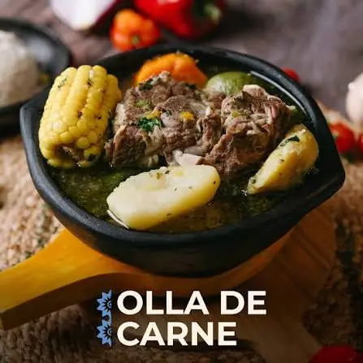

Restaurantes en Cartago camino al volcán
Uno de los mejores restaurantes camino al volcán.

El auténtico sabor tradicional camino al Volcán Irazú
Reservar Ahora: 2544-0626Uno de los mejores restaurantes de la zona alta de Cartago.
Uno de los mejores restaurantes camino al volcán.
Disfruta de nuestra impresionante vista mientras disfrutas nuestros platillos en nuestro mirador.
Jueves a Domingo
05:00 AM - 10:00 PM
Disfruta de la auténtica comida preparada con ingredientes de la zona.

